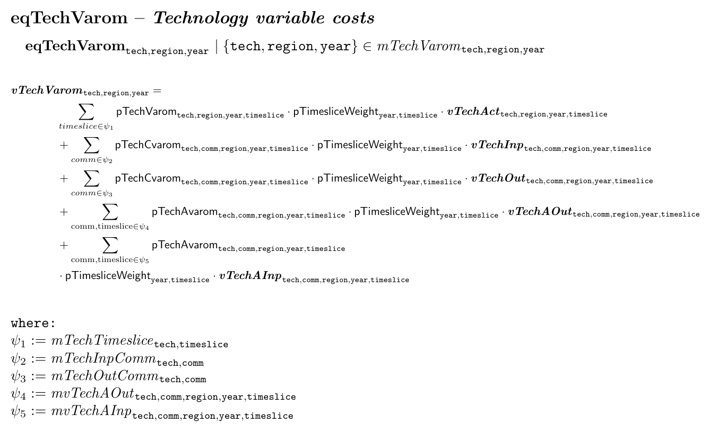
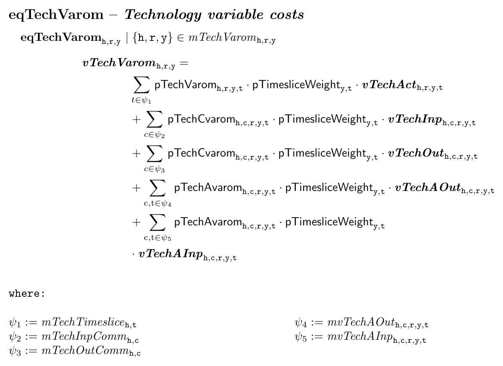
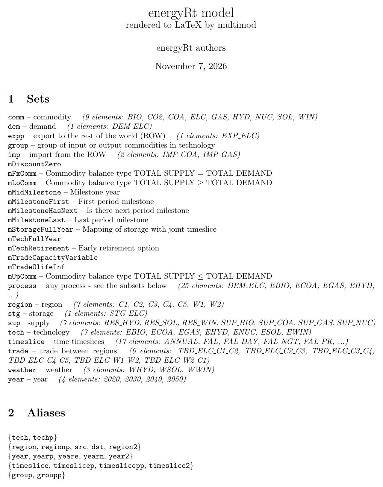

as_latex() converts an equation or any node of the
abstract syntax tree (AST) to LaTeX; write_latex() writes
an equation or a whole model to a .tex file. The examples
use the energyRt model shipped with the package.
An equation
eq$lhs
#> <AST variable> vTechVarom
#> dims: [tech,region,year]
as_latex(eq$lhs) |> cat()
#> \bm{\mathit{vTechVarom}}_{\texttt{tech},\texttt{region},\texttt{year}}write_latex() writes the equation as a standalone
document. Long equations are broken into lines, and long conditions are
moved below the equation under a where header.
f <- file.path(tempdir(), "eqTechVarom.tex")
write_latex(eq, file = f)
tinytex::pdflatex(f)
Short index names
alias_map replaces set names with shorter indices; the
model carries a set of them in index_aliases.
head(m$index_aliases)
#> comm region year timeslice sup dem
#> "c" "r" "y" "t" "u" "d"
f <- file.path(tempdir(), "eqTechVarom_short.tex")
write_latex(eq, file = f, alias_map = as.list(m$index_aliases))
tinytex::pdflatex(f)
The whole model
Applied to a model, write_latex() writes sets, aliases,
parameters, variables, mappings and equations, with set members and data
sizes. The include_* arguments select the sections; for a
folded or trimmed model, model_view = "full" marks the
removed parts (see Model redundancy).
f <- file.path(tempdir(), "energyRt.tex")
write_latex(m, file = f, title = "energyRt model",
subtitle = "rendered to LaTeX by multimod",
author = "energyRt authors")
tinytex::pdflatex(f)